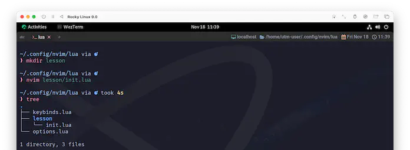
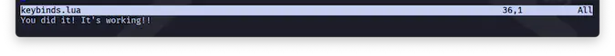
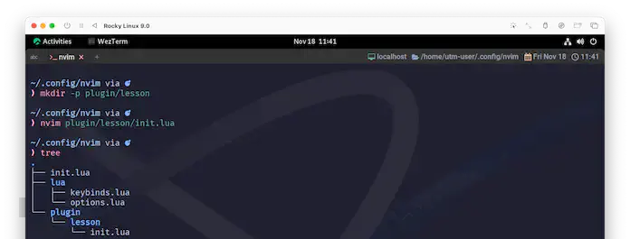
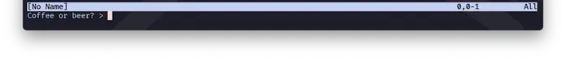
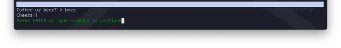

Call The Plugin
この章もこれで最後です☺️ もうちょっとだけがんばれ❗
require
少し手順が増えますが、lessonディレクトリを作って、その中にinit.luaを配置してください。
こんな感じで😉

うん😄 そうしたらlesson/init.luaにコードを入れておきます。
で、これを呼び出したいんですが、結局またkeybinds.luaを使ってしまいます。
じゃあ、ぽちぽちっとLeader9で呼んでみましょう...。動くかなぁ〜❓

動いたぁ〜❗😆
keymap.setからプラグインが持っている機能を呼び出すのは、よく見られる使い方です。
:source と require()
:sourceについて、14.1 Warming Upで触れたんですが、一個気にしたいことがあって、それがrequireです。
requireには二度目以降の呼び出しはキャッシュを読みにいくっていう賢いとしか言いようがない仕様があるんですけど、
例えばrequireの先をどんなに更新していようとも、:soだと更新前のキャッシュを実行するだけになるみたいなんですね。
require controls whether a file has already been run to avoid duplicating the work.
requireは、ファイルが既に実行されているかどうかを制御し、作業の重複を防ぐ。
例えば、Neovimを終了させずに下の変更を反映させる方法が見つからない...。
なので、なんか思った通りいかないー❗ってなっても慌てないで😉
requireのキャッシュを読み直してるだけっていう可能性を疑ったり、Neovimを起動し直して試すっていうことも選択のうちに入れておいて下さい😉
nvim_create_user_command
もう一個だけやっておきたいのは、独自コマンドからプラグインを使うパターンです。
今度はnvimディレクトリまで上がって、plugin/lessonディレクトリを作成してください。

今回のように、2階層以上のディレクトリを作成したい場合、本来は「親ディレクトリから順に作っていかなければエラー」となりますが、
# -p を使わないと2手かかる
mkdir plugin
mkdir plugin/lesson
-pオプションを使用することで、このような手間を回避して一気に作成できます。
これもあんまり深くは潜らず、さらっとだけやります。
nvim_create_user_command({name}, {command}, {*opts})
Create a new user command |user-commands|
{name} is the name of the new command. The name must begin with an
uppercase letter.
{command} is the replacement text or Lua function to execute.
新しいユーザーコマンドを作成する |user-commands| 。
{name} は新しいコマンドの名前。名前は大文字で始まる必要がある。
{command}は、実行する置換テキストまたはLua関数。
それでは、nvim/plugin/lesson/init.luaにコードを書きます。
vim.api.nvim_create_user_command('Order', function()
if vim.fn.input('Coffee or beer? > ') == 'beer' then
vim.cmd.echo '"\nCheers!!"'
end
end, {})
コードは:h inputのExampleから持ってきて、luaで動くように書き換えました。
input({opts})
The result is a String, which is whatever the user typed on
the command-line.
結果は String で、ユーザーがコマンドラインで入力したもの。
Example:
:if input "Coffee or beer? " == "beer"
: echo " Cheers!"
:endif
pluginディレクトリに置いたluaファイルはrequireなどをしなくても自動で読み込まれます。
じゃあ、実際にオーダーしてみましょう。コマンドから:Orderと入れてみてください。
:Order
Coffee☕ もいいけど、今日はもう終わりだし beer🍺 でいいよね😆

乾杯❗🍻

Wrap up
本当はもっと:h packagesで説明されているような、本格的なものを作れたら良かったんだけど、
わたしがその領域にまで達していないので、かなりチープな付け焼き刃になってしまっているんですが、雰囲気くらいは伝わったでしょうか...❓😅
お互い、頑張りましょう🤗
プラグインは帰ってくる